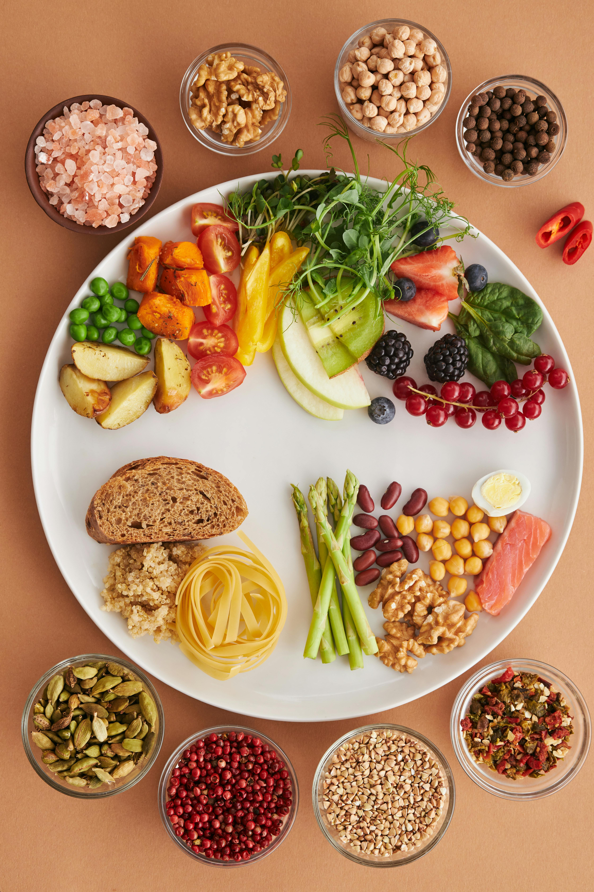

Featured Content

Build a Balanced Plate
Learn how to balance carbs, protein, and fats using foods you can actually afford and find on campus or at home.
- Quick visual guide to portions
- Budget-friendly ingredient ideas
- Example meals for breakfast, lunch, and dinner
More Healthy Ideas
Use these recipes to start building a personal collection of go-to meals.
Snack Swaps
Swap chips for popcorn, candy for fruit + nuts, and soda for flavored sparkling water.
Quick Lunches
Try grain bowls with frozen veggies, rotisserie chicken, beans, and your favorite sauce.
Dinner in 20 Minutes
Keep staples like whole-grain pasta, canned tomatoes, and frozen veggies on hand for fast meals.